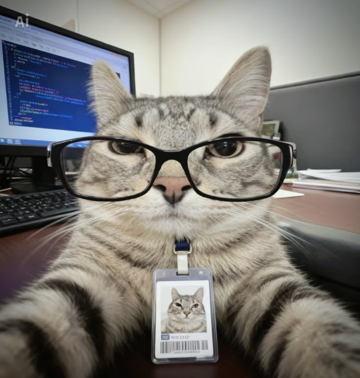
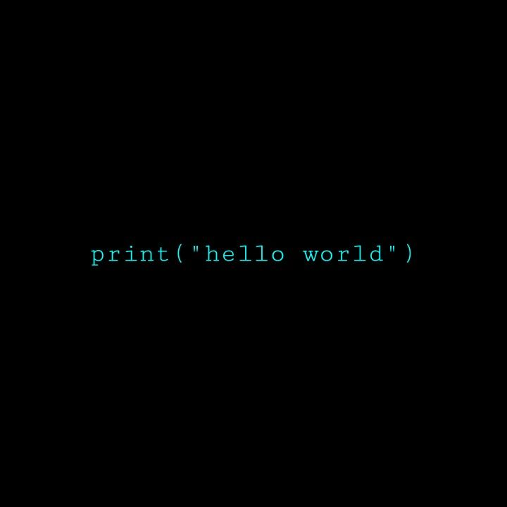

Início
Este site foi desenvolvido como parte das aulas de Desenvolvimento Web, ministradas pelo professor Paulo Tassio.
Sua criação foi motivada por uma atividade proposta em sala de aula, com o objetivo de colocar em prática e aprimorar os conhecimentos adquiridos ao longo das aulas.
O projeto foi desenvolvido utilizando as tecnologias HTML, CSS, JavaScript e PHP, aplicando conceitos fundamentais de estruturação, estilização e programação para a construção de páginas web.

Sobre mim
Tenho muita curiosidade e grande interesse por tecnologia e pelo funcionamento das coisas ao meu redor. Gosto de programação principalmente pela possibilidade de compreender como sistemas, programas e ferramentas funcionam internamente, buscando entender a lógica por trás de cada mecanismo.
Tenho interesse em explorar diferentes áreas do conhecimento, aprender coisas novas e desenvolver habilidades variadas. Embora goste bastante de tecnologia e programação, não pretendo necessariamente seguir carreira profissional nessa área. Vejo esses conhecimentos como uma forma de ampliar minha compreensão do mundo, exercitar meu raciocínio lógico e satisfazer minha curiosidade.
Também tenho interesse em explorar diferentes possibilidades profissionais no futuro, especialmente por meio de concursos públicos destinados a candidatos com formação de nível superior. Dessa forma, pretendo aproveitar minha formação acadêmica para conhecer novas áreas e oportunidades, mantendo abertas diferentes possibilidades para minha carreira.
Experiência
Minha experiência:
Atualmente, não possuo experiência profissional. Meu contato com a área de tecnologia começou durante a faculdade de Ciência da Computação, onde tive a oportunidade de conhecer programação e explorar os fundamentos do desenvolvimento de sistemas.
Conhecimentos e interesses:
- Interesse em aprender a desenvolver e criar sistemas.
- Curiosidade sobre programação e funcionamento de softwares.
- Interesse em aprender novas linguagens de programação.
- Vontade de aprimorar meus conhecimentos em tecnologia.

Formação
- Cursando Bacharelado em Ciência da Computação.
Cursos
-
Informática Essencial
- Introdução à Informática
- Windows 11
- Microsoft Word 2019
- Microsoft Excel 2019
- Microsoft PowerPoint 2019
- Meu Novo Emprego
- Marketing Pessoal
- Introdução à Cibersegurança
Habilidades
- Pacote Microsoft Office (Word, Excel e PowerPoint)
- Conhecimentos em Windows 11
- Noções de Informática
- Facilidade de aprendizagem
- Organização
- Responsabilidade
- Trabalho em equipe
Projetos
Site pessoal - Currículo Online
Desenvolvimento de um site pessoal como atividade prática da disciplina de Desenvolvimento Web, utilizando HTML e CSS.
O projeto tem como objetivo apresentar informações pessoais, formação acadêmica, conhecimentos, habilidades e interesses, aplicando conceitos de estruturação e estilização de páginas web.
Contato
- E-mail: diogosantoss1414@gmail.com